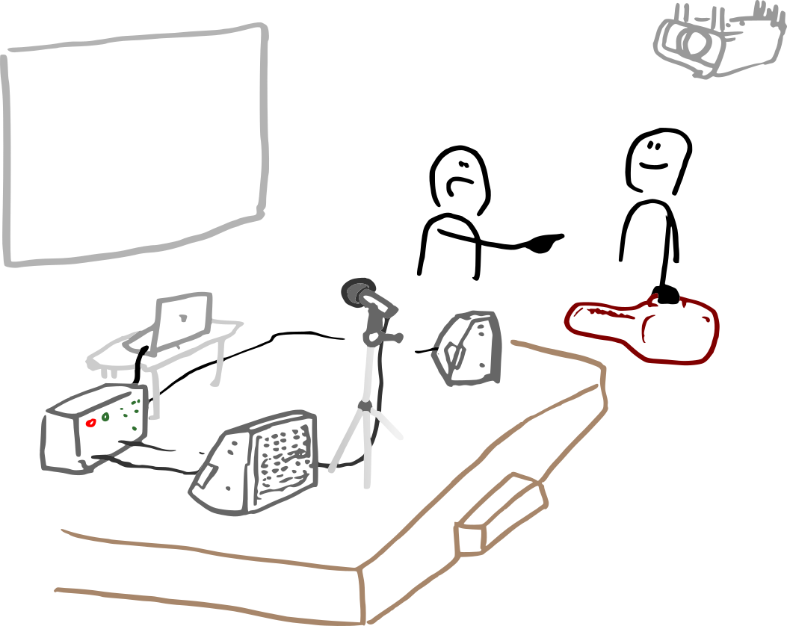
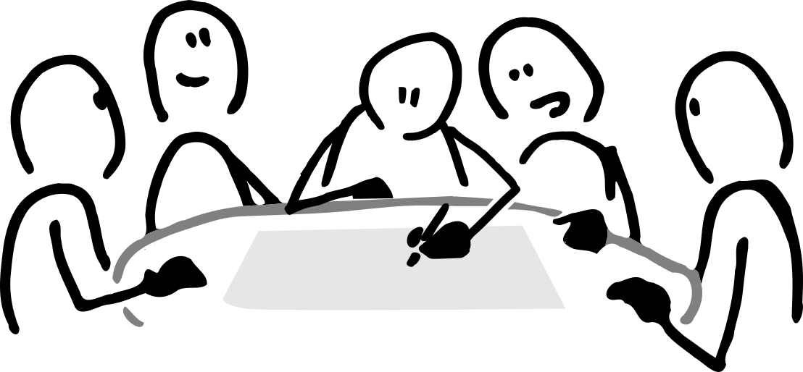
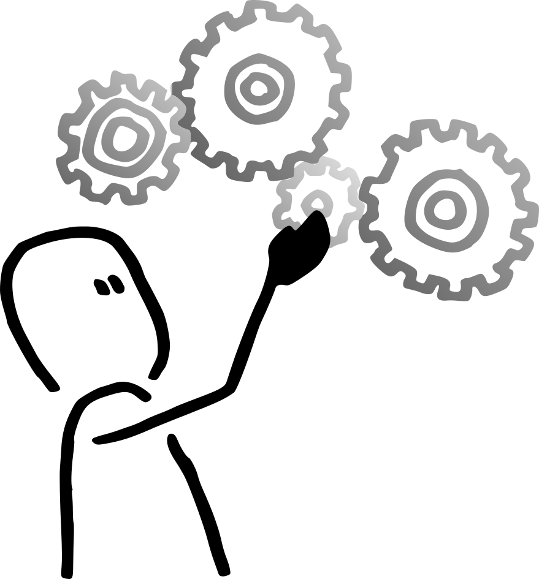
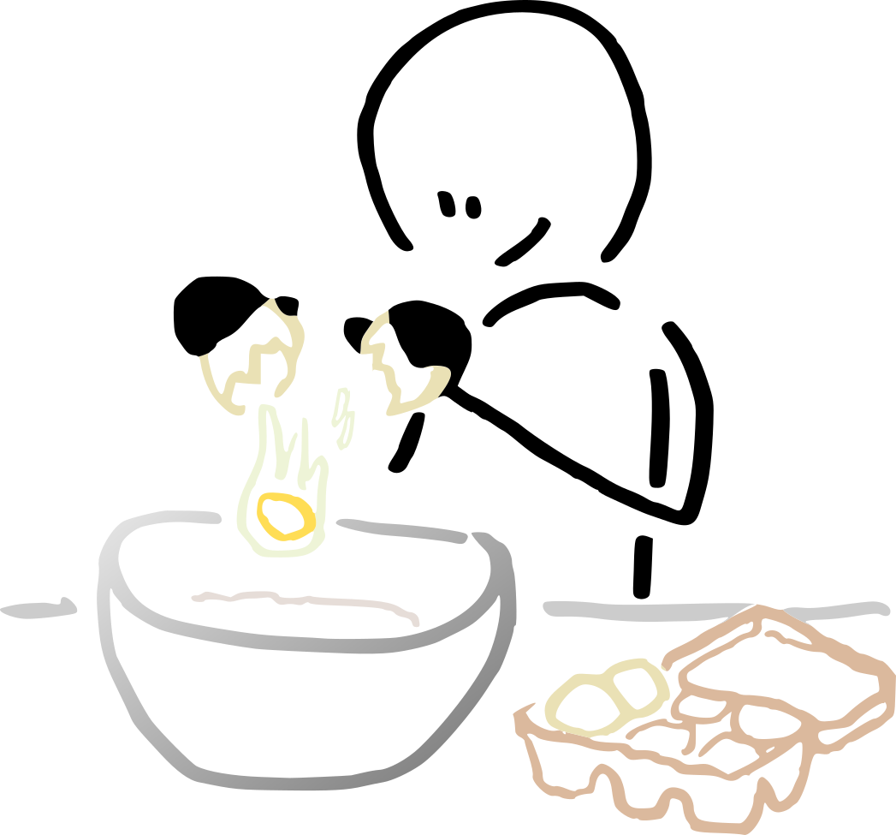

Le programme¶
Ce qui se passerait dans le lieu¶
Ces pistes sont des hypothèses, pas une programmation arrêtée. Elles pourront grossir, disparaître, en faire naître d'autres. Elles sont écrites pour être discutées.
Un comptoir comme premier dispositif pédagogique¶
Le bénévolat de service en bar n'est pas une variable d'ajustement économique : c'est notre principal outil de mise en relation. Une serveuse ou un serveur bénévole de l'Upop' Bar n'a pas pour mission de remplir des verres le plus vite possible. Sa mission est de faire circuler les présences. Cela suppose un accompagnement, un cadre, des temps d'échange entre bénévoles, et probablement une formation courte à cet art très spécifique de l'hôte ou de l'hôtesse de tiers-lieu. Le bar est ouvert au public au sens strict ; les serveurs et serveuses, eux, sont en posture de passeurs.
De la musique vivante¶
Avant d'être une coopérative qui fabrique du logiciel, Code Commun est né d'un festival. TiBillet est sorti des coulisses du Manapany Festival, dans le sud sauvage de La Réunion, parce que aucun outils du marché ne convenait à une équipe de "commoners".
La coopérative s'est ensuite consolidée à la Raffinerie devenue tiers-lieu fondateur de RTLx : le réseau régional des tiers-lieux de l'île. Le geste qui a fondé le projet : fabriquer des outils pour les collectifs le jour, les utiliser le soir.
C'est cette dimension-là que la coopérative apporte concrètement au collectif Upop' Bar : une équipe qui sait monter une scène, câbler une console, accueillir un musicien, tenir une billetterie, s'assurer que tout est là pour faire la fête en sécurité. À la Raffinerie, les concerts du mercredi et du vendredi soir n'étaient pas une animation accessoire : c'étaient le moment où le lieu se remplissait, où les heures de chantier se transformaient en bières échangées entre voisins, où une centaine de personnes découvraient le lieu en venant pour un concert et y revenaient pour le bricoler. La programmation culturelle n'était pas une vitrine : c'était l'oxygène du tiers-lieu.

À la Filature, on imagine la même chose. Des concerts réguliers en pavillon ou en terrasse (musiques actuelles, résidences d'artistes locaux, propositions de programmateurs et programmatrices invité·es).
Une régie tenue par des gens qui en font leur métier change tout pour les artistes accueilli·es, et peuvent, en chemin, devenir un terrain de formation pour des bénévoles qui voudraient apprendre la régie son et lumière auprès de pros.
En savoir plus sur Code Commun et son ancrage festival
Des conférences, des débats, des arpentages¶
C'est le cœur historique de l'éducation populaire. Le bar peut être l'un des lieux où ça se tient. On peut imaginer des cycles autour des sciences et de leur vulgarisation, des débats sur les transitions écologique et sociale, des arpentages d'ouvrages à plusieurs voix : La Méandre connaît bien cette méthode, héritée de Peuple et Culture.
Un volet échanges rural-urbain pourrait s'inscrire dans la durée, en partenariat avec des structures comme Polymorphe et Le Teil. La science n'a pas besoin d'être redoutée, et le savoir savant n'est pas seul à produire de la connaissance.
En savoir plus sur La Méandre et la méthode d'arpentage

Des ateliers de réemploi et d'écologie pratique¶
Un repair'café mensuel, un samedi après-midi, co-animé par l'Atelier Soudé et Eisenia, ouvert à tous les habitants et habitantes du quartier qui apportent un grille-pain ou un vieux portable. Une journée annuelle de bricolage de bornes d'arcade en récup, comme Eisenia sait les animer. Un atelier compost à cheval entre la cuisine et la cour. Le bar n'est pas une ressourcerie, mais il peut être une porte d'entrée amicale vers les pratiques du réemploi, dans un quartier où ces lieux sont précieux et trop peu visibles.
En savoir plus sur l'Atelier Soudé et sur Eisenia.
Un espace du faire pour les communs numériques inclusifs¶
Jonas et Marc parlent souvent d'un lieu d'apprentissage du numérique sur le modèle de TUMO. Des élus de Villeurbanne sont même allé visité l'école Arménienne lors du précédent mandat. L'idée nous paraît juste, et nous avons quelque chose à y mettre : Code Commun et l'Atelier soudé fabriquent des communs numériques utilisés par 300 lieux et 60 000 personnes (TiBillet.org, reparons.org, openbadge.coop, hypostasia.org).
Plutôt que des exercices déconnectés, l'apprentissage du code peut se faire sur des projets réels, contribués par les apprenant·es elles-mêmes à des outils utilisés par d'autres associations. Avec un soin particulier pour la mixité sociale, de genre et l'accessibilité aux personnes en situation de handicap, ce qui distingue ce projet des incubateurs numériques classiques.
En savoir plus sur les outils TiBillet et l'écosystème de communs numériques porté par Code Commun

Des formations courtes ancrées dans le quotidien¶
Quelques exemples : des matinées d'accompagnement à la parentalité animées par Mathilde, kinésithérapeute pédiatrique. Cours de portage, accompagnement à la motricité libre, massages bébé. Pratiques fondées sur les données scientifiques, en réponse à un besoin réel des familles du quartier. Le bar n'est pas un cabinet, mais il peut être l'écrin amical de ce type de transmission, un espace où l'on apprend dans la durée, en confiance, sans le formalisme d'une salle de classe. D'autres formations du même esprit suivront.
Une cuisine à inventer avec Des Saveurs et des Ailes¶
L'espace cuisine existe à La Filature, mais l'équipement reste à monter. Plutôt que d'en faire un projet de second rideau, on aimerait le construire dès le début avec des structures dont c'est le métier : Des Saveurs et des Ailes, l'Archipel et la Cantina qui portent des projets d'insertion professionnelle dans la restauration.
En savoir plus sur Des Saveurs et des Ailes

Une popote commune qui devient cuisine de quartier¶
Le midi, on cuisine ensemble. C'est d'abord une popote commune pour nourrir les gens du tiers-lieu (résident·es de La Filature, bénévoles, personnes de passage), végétarienne, à prix libre, portée par des bénévoles qui ont envie de mettre la main à la pâte. Ce moment-là a vocation à déborder vite vers le voisinage.
L'idée, c'est qu'une popote ne reste pas une popote longtemps : elle devient une cuisine commune où l'on échange des recettes, où l'on apprend de pair à pair, où la grand-mère kabyle d'une tour voisine peut montrer sa tchakchouka à un étudiant qui n'a jamais cuisiné, où un ouvrier du chantier d'à côté passe poser sa gamelle et finit par expliquer comment sa mère faisait la ratatouille. La cuisine est un des rares espaces où les savoirs circulent sans hiérarchie. Le bar peut tenir cet espace.
Concrètement, le but est de nourrir le tiers-lieu et un peu de voisinage : des voisin·es des immeubles autour, des ouvriers et ouvrières des chantiers du quartier qui cherchent un déjeuner chaud et pas cher, des collègues d'autres structures de l'écosystème Villeurbannais qui font un détour. Quinze à vingt couverts par jour pour commencer, en cuisinant volontairement un peu plus que ce qu'on est sur place : il vaut mieux finir avec quelques portions en trop qu'avec des assiettes vides.
Ce surplus, justement, devient une ressource. Les restes sont reconditionnés en barquettes à emporter ou en plats réchauffés, proposés en mode anti-gaspi le soir pendant les concerts et les soirées : un petit plat à trois ou quatre euros, qui dépannent un·e spectateur·ice qui n'a pas eu le temps de dîner, qui font une rentrée d'appoint pour le bar, et surtout qui font qu'on ne jette rien. C'est un geste simple, mais il dit beaucoup : on ne cuisine pas pour faire du chiffre, on cuisine pour bien faire, et tout ce qui dépasse sert deux fois.
Cette cuisine de quartier ne remplace pas le projet d'insertion avec Des Saveurs et des Ailes (ce sont deux échelles différentes) : elle vit à côté, en complément, sur un autre rythme. Et elle peut, en chemin, ouvrir des ateliers cuisine plus formels (initiation aux protocoles d'hygiène en collectivité, ateliers anti-gaspi, transmissions intergénérationnelles autour d'une recette), en lien avec les structures du quartier qui y verraient une utilité.
En savoir plus sur le modèle Cascade et le prix libre